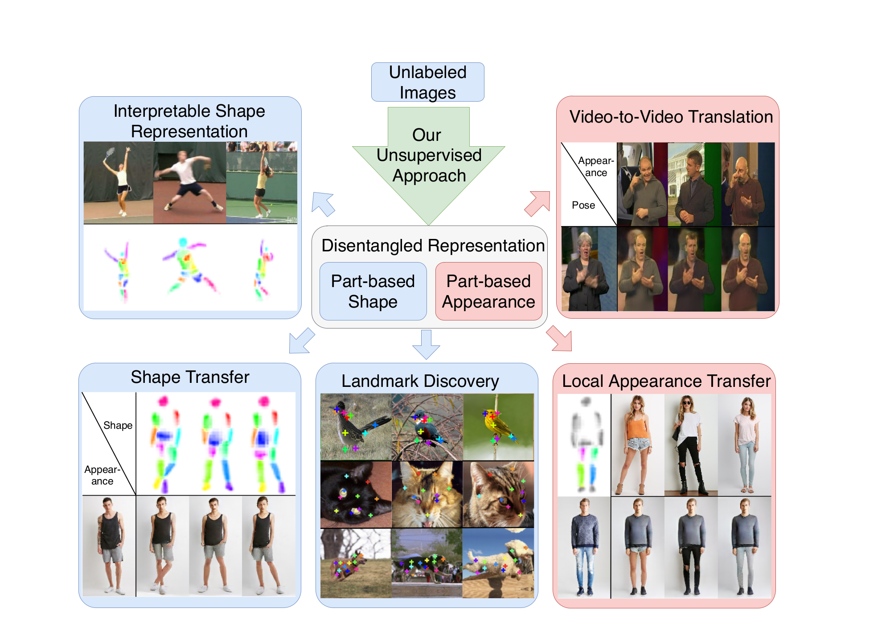
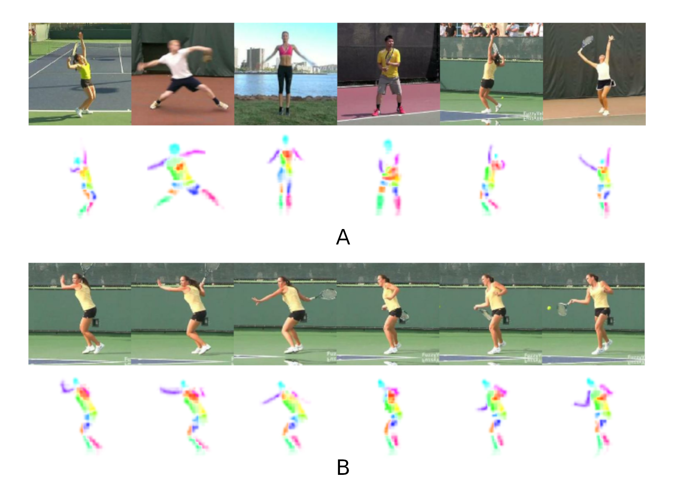
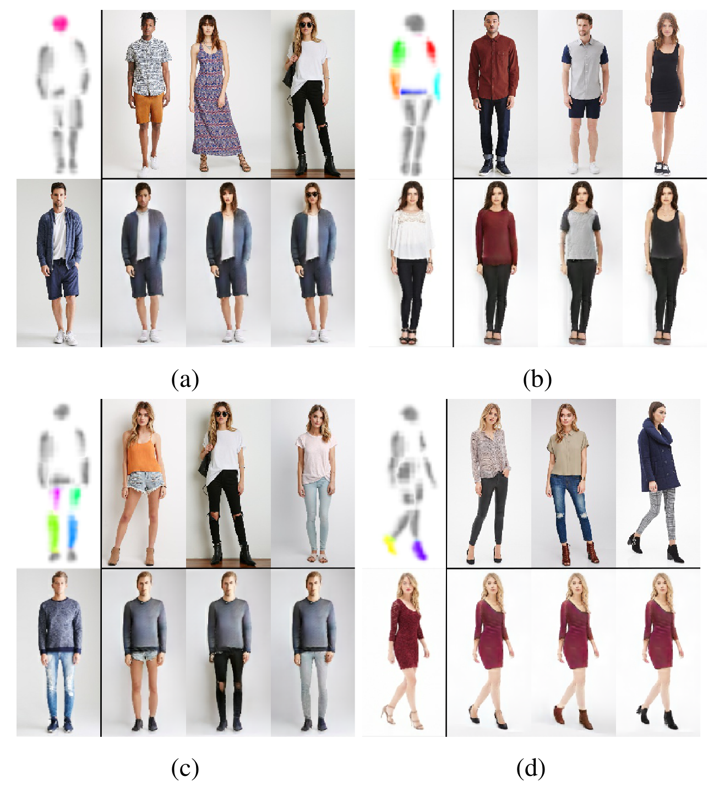
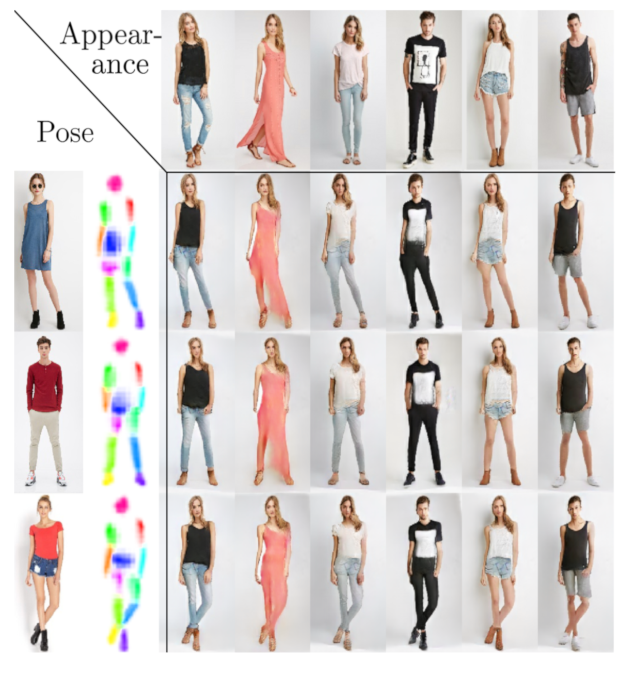
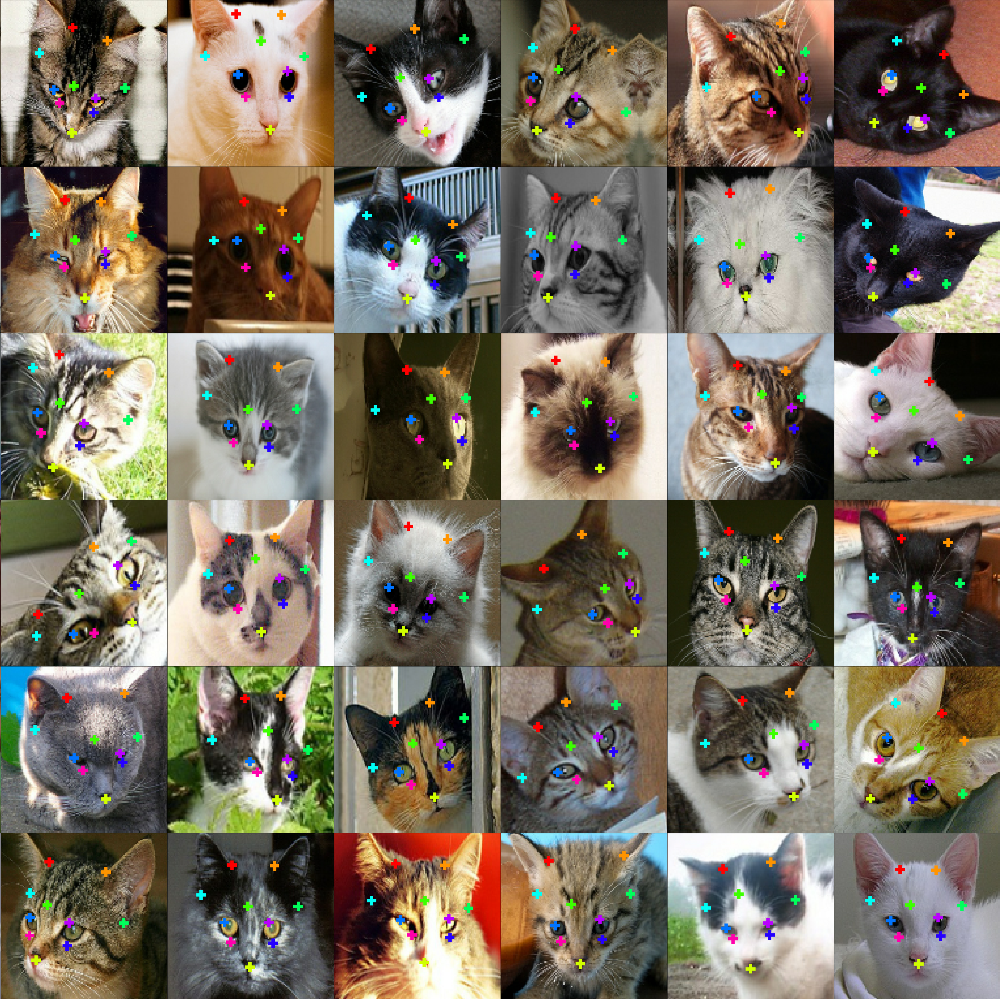

Results
and applications of our model.

{kind=link}
Our unsupervised learning of a disentangled part-based shape and appearance enables numerous tasks ranging from unsupervised pose estimation to image synthesisand retargeting

{kind=link}
Learned shape representation on Penn Action. (a) Different instances, showing intra-class consistency and (b) video sequence, showing consistency andsmoothness under motion, although each frame is processedindividually.
Unsupervised Video to Video transfer on the BBC-Pose Dataset
Local appearance transfer on the DeepFashion Dataset

{kind=link}
Swapping part appearance on Deep Fashion. Appearances can be exchanged for parts individually and without altering shape. We show part-wise swaps for (a) head (b) torso (c) legs, (d) shoes.

{kind=link}
Transferring shape and appearance on Deep Fashion. Without annotation the model estimates shape (2nd column). Target appearance is extracted from images in top row.
{kind=link}

{kind=link}
Unsupervised keypoints on Cat-Head Dataset